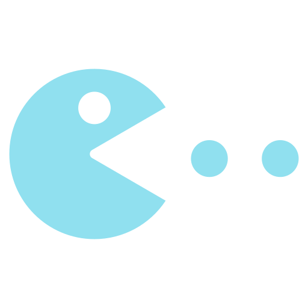

Telegram Tools
Инструменты для вашей гиперуникальности в ТелеграмеСтатусы
Удивляй и раздражайЧто это такое?
Вы выбираете пользователя в телеграмме, затем выбираете статус.
В зависимости от статуса который вы выбрали пользователи будут постоянно его наблюдать - не важно, в сети вы или оффлайн.
Как это выглядит?
Попробуйте представить здесь свой ник и аватар
Возможные статусы
Печатает
Отправляет видео
Смотрит на ❤️

Играет в игру
Записывает аудио
Выбирает стикер
Интересный факт:
Создание Telegram Tools началось именно с идеи кастомных статусов